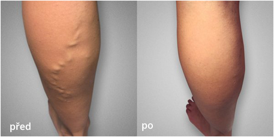

Jak jsem se zbavila křečových žil za jeden týden!
Zveřejněno | Autor: Katka
Ahoj kamarádi, už jsem zase tady! V poslední době se mi stalo spousta zajímavých věcí, ale rozhodla jsem se napsat vám jen o těch nejdůležitějších! Podařilo se mi ZBAVIT SE křečových žil už za jeden týden!
Pamatujete, si jak jsem se ptala na rady ohledně léčby křečových žil? No, vyzkoušela jsem všechny tradiční metody léčby a mohu potvrdit, že nefungují! To jediné, co se mi na vašich radách zalíbilo, byl
odvar z vlaštovičníku
(děkuju, Nikolo). Bolest zmizela už po prvním použití, ale efekt je dočasný a křečové žíly nechtějí zmizet. Hned další den se bolest vrátí.
Určitě vás zajímá, co mi nakonec pomohlo. Mým cílem bylo zbavit se křečových žil jednou provždy! Poslední možností byla operace, ale nechtěla jsem jít pod nůž, protože tyto operace jsou drahé. Tedy...ve skutečnosti mi o peníze tolik nešlo, ale chtěla jsem se vyhnout příšerným následkům této operace.

Rozhodla jsem se, že to už vzdám, ale potom jsem náhodou narazila na jedno fórum. Jeden zkušený lékař tam napsal, že křečové žíly lze vyléčit bez operace i lidových medicín. Potřebujete jen speciální turmalínový aplikátor s magnetickými vložkami, který se jmenuje .
Byla to moje poslední naděje, takže jsem si tuto pomůcku objednala na oficiální webové stránce.
O 4 dny později mi přišel balíček a začala jsem pomůcku používat přesně podle instrukcí. Co myslíte?
byla jsem naprosto ohromena! Zbavila jsem se KŘEČOVÝCH ŽIL za 7 dní!!! Dokážete tomu uvěřit? Nemohla jsem věřit vlastním očím... Už žádné křečové žíly na nohou! Měla jsem krásné nohy a necítila jsem žádnou bolest!!! Udělala jsem dobře. Nemohu ani popsat, jak šťastná jsem. Naposledy jsem se cítila tak dobře asi před 20 lety :)

Objednala jsem si pomůcku z těchto webových stránek. Jde o jedinou certifikovanou společnost v Česku, která prodává. Co se týče doručení, balíček dostanete na poštu, takže je všechno velmi bezpečné. Cena je nyní snížená, takže si pospěšte a objednejte si ho! Doufám, že vám tyto informace byly k něčemu dobré a že i vy budete mít za několik dní krásné nohy! Hodně štěstí!